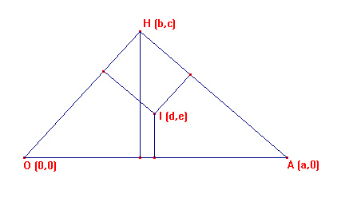
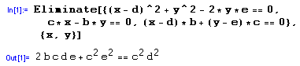
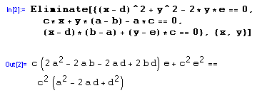
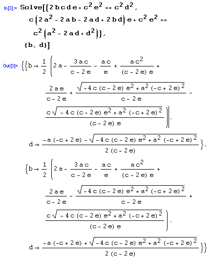

Nicolás Rosillo.
Dpto. Matemáticas, IES Máximo Laguna.
Santa Cruz de Mudela, Ciudad Real
nrosillo@olmo.pntic.mec.es
Sin pérdida de generalidad, se puede suponer una configuración como la siguiente:

Los datos conocidos son a, e y c.
La circunferencia inscrita ha de ser tangente a los 3 lados del triángulo, por lo que en los puntos de intersección los radios han de ser perpendiculares a los lados, lo que indica que para la figura dada la longitud del radio es el valor absoluto de e. Así, una primera condición sobre (d,e) supuesto el incentro se obtiene escribiendo la ecuación de la circunferencia de centro (d,e) y radio e.
e imponiendo que un punto (x,y) de la misma esté en el lado OH:
a la que añadimos la condición para que el radio trazado en dicho punto sea perpendicular a ese lado:
Eliminado x e y en esas tres ecuaciones se obtiene la ecuación
como muestra la figura siguiente, describiendo parte de una sesión con Mathematica.

La ecuación obtenida relaciona (d,e) con las coordenadas de los vértices del triángulo.
Análogamente, haciendo lo mismo con el lado AH, se obtienen las ecuaciones
a partir de las cuales, por eliminación, se deduce una segunda condición de relación de las coordenadas del incentro:

Resolviendo el sistema formado por las dos ecuaciones obtenidas, resultan las coordenadas de b y d en función de los datos conocidos, a, c y e:

El programa obtiene dos soluciones.